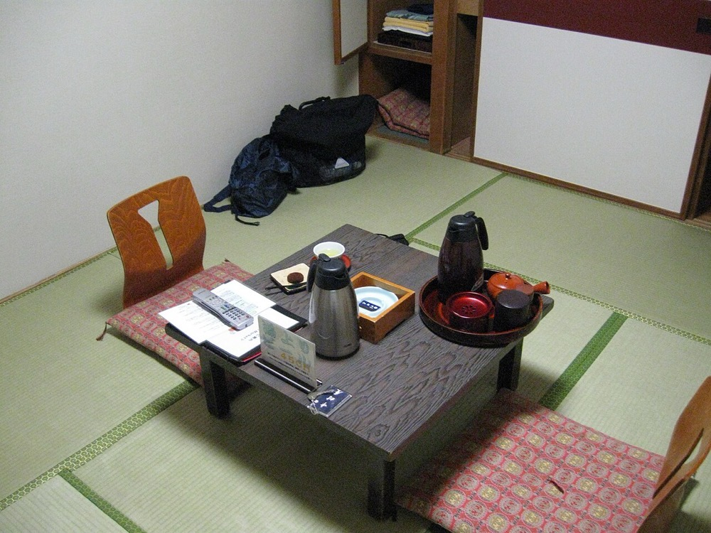
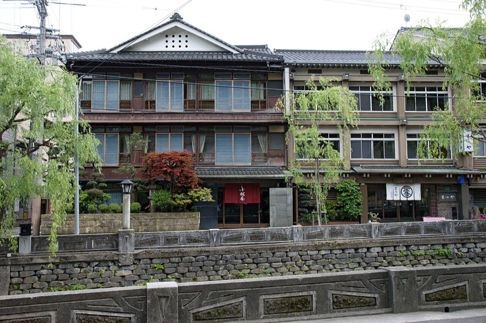

設備が古く稼働率の低い温泉旅館を、土地と建物を担保にした融資で取得する。改修で客室単価を上げ、訪日客と国内の高単価客に販売する。複数の旅館を1つの運営会社で管理し、予約・仕入・人員配置を共通にして利益率を上げる。
宿泊業の売上高は2023年に6.9兆円である1。旅館に限った売上高の統計は確認できなかった。2018年の旅館業法改正で旅館営業とホテル営業が統合され、それ以降は施設数も合算でしか公表されていない3。
訪日客の旅行消費額は2025年に9兆4,549億円で、宿泊費が36.6%を占める4。
推計 訪日客の宿泊費 ＝ 9兆4,549億円 × 36.6% ≒ 3.46兆円
2023年の宿泊業の売上高6.9兆円と年が異なるため、比率は参考値である。訪日客の宿泊費のうち旅館が占める割合は確認できなかった。
旅館は日本に固有の宿泊形態であり、世界の旅館市場という統計は存在しない。本ページでは世界のホテル市場の規模を一次情報で確認していない。
| 年 | 変化 | 数値 |
|---|---|---|
| 2003〜2014年度 | 旅館営業の施設数の減少 | 59,754施設から41,899施設へ29.9%減った。同じ期間にホテル営業は8,686施設から9,879施設に増えた2 |
| 2018年6月 | 旅館業法改正で旅館営業とホテル営業が統合された | 以後は旅館・ホテル営業として合算で公表される3 |
| 2023年度補正予算 | 観光庁が観光地の再生・高付加価値化事業に予算を計上した | 約200億円。宿泊施設の改修の補助率は1/2または2/35 |
| 2024年度 | 宿泊施設の定員稼働率 | 旅館21%、ビジネスホテル60%、シティホテル59%6 |
| 2024年度 | 訪日客の延べ宿泊者数 | 約1.64億泊で全体約6.59億泊の約4分の16 |
| 2024年度末 | 旅館・ホテル営業の施設数 | 52,946施設で前年度比3.7%増。簡易宿所は44,901施設で7.1%増3 |
| 2025年 | 訪日客の旅行消費額 | 9兆4,549億円で過去最高4 |
訪日客の宿泊需要は増えているが、旅館の定員稼働率は21%に留まり、ビジネスホテルの約3分の1である6。需要が旅館に向かっていないのではなく、設備と販売の仕組みが訪日客に合っていない旅館が多いと考える。改修の資金を自力で調達できない旅館は、施設の価値が下がる前に譲渡先を必要としている。

| 種類 | 事業者 | 動き |
|---|---|---|
| 投資ファンド傘下の旅館チェーン | GENSEN HOLDINGS 大江戸温泉物語ブランド | 米ローンスター傘下。2024年に湯快リゾートと統合した。2025年度は71施設で宿泊売上654億円。2030年に向けて100施設、売上高1,200億円を掲げる7 |
| 運営特化の旅館再生 | 星野リゾート | 経営難の旅館とリゾートの運営を受託して再生した先例。非上場で、売上高と施設数は本ページで確認していない |
| 公的な再生ファンド | 地域経済活性化支援機構と地域金融機関 | 観光遺産産業化ファンド30億円。破産した旅館を買い取り、複数の旅館の改修と運営委託を1つの会社で行う旅館統合プラットフォームに出資した例がある8 |
首位の条件 宿泊業6.9兆円の全体では、GENSENの宿泊売上654億円でも約0.9%である17。首位を狙うなら領域を絞る必要がある。条件は3つある。①1つの温泉地か1つの県に施設を集め、仕入と人員を共有できる密度を確保すること。②改修後の客室単価を、訪日客が予約サイトで比較する価格帯に合わせること。③地域金融機関から、債権放棄を伴う再生案件の紹介を継続して受けること。

1施設目は、客室20〜30室で負債が過大になった温泉旅館とする。地域金融機関が債権の一部を放棄し、土地と建物を本案の会社が取得する再生案件を想定する。
| 用途 | 金額 | 検証すること |
|---|---|---|
| 案件の検索と調査 6か月 | 700万円 | 地銀と再生支援機関から、条件に合う案件を何件紹介されるか。建物の耐震と配管の状態 |
| 1施設目の取得の自己資金 | 2,000万円 | 土地・建物を約1.5億円で取得できるか |
| 改修の自己負担分の一部 | 1,000万円 | 補助金を使い、客室10室を先行して改修できるか |
| 予約と客室単価の管理の仕組み | 300万円 | 海外の予約サイト経由の比率と単価の改善幅 |
| 合計 | 4,000万円 |
| 月 | 計画 |
|---|---|
| 1〜3月目 | 対象を1つの温泉地に絞る。地銀の再生担当と、観光地の再生計画を作成している自治体に接触し、候補を10件集める |
| 4〜6月目 | 1件と基本合意する。改修計画を作成し、観光庁の高付加価値化事業と自治体の補助に申請する |
| 7月目 | 土地と建物を取得する。資金は自己資金2,000万円、地銀の不動産担保融資約1億円、日本政策金融公庫の融資約3,000万円とする |
| 8〜12月目 | 営業を続けながら客室を順に改修する。海外の予約サイトへの掲載と、法人の研修・招待旅行の営業を始める |
1年目の判定基準は、改修した客室の単価が改修前から30%以上上がり、月次の営業キャッシュフローが黒字になることである。
| 段階 | 資金 | 金融機関 | 条件 |
|---|---|---|---|
| 1施設目 1年目 | 不動産担保融資、事業性融資、改修の補助金 | 地銀、信用金庫、日本政策金融公庫 | 土地と建物を担保にする。補助率は1/2または2/35。補助上限は本ページで確認していない |
| 2〜5施設目 2〜4年目 | 再生ファンドとの共同出資、資本性劣後ローン | 地域経済活性化支援機構と地銀のファンド、日本政策金融公庫 | ファンドが施設を保有し、本案の会社が運営を受託する形も取る8。資本性ローンの限度は15億円9 |
| 6施設目以降 5年目以降 | 施設単位のノンリコースローン、セール・アンド・リースバック | メガバンク、不動産ファンド | 稼働の安定した施設を不動産ファンドに売却し、運営は続ける。売却代金を次の取得に充てる |
| 年目 | 1 | 2 | 3 | 5 | 7 | 10 |
|---|---|---|---|---|---|---|
| 施設数 | 1 | 3 | 6 | 15 | 30 | 60 |
| 売上高 億円 | 1.2 | 6 | 14 | 40 | 90 | 200 |
| 営業利益 億円 | 0.05 | 0.5 | 1.5 | 5 | 12 | 30 |
| 累計投資 億円 | 2.5 | 8 | 18 | 45 | 95 | 190 |
| 借入残高 億円 | 2.1 | 6.5 | 14 | 35 | 72 | 140 |
| 年目 | 1 | 2 | 3 | 5 | 7 | 10 |
|---|---|---|---|---|---|---|
| 施設数 | 1 | 2 | 3 | 6 | 10 | 18 |
| 売上高 億円 | 1.2 | 4 | 7 | 15 | 27 | 50 |
| 営業利益 億円 | -0.1 | 0.2 | 0.5 | 1.2 | 2.5 | 5 |
| 累計投資 億円 | 2.5 | 5.5 | 8.5 | 18 | 30 | 54 |
| 借入残高 億円 | 2.1 | 4.5 | 7 | 14 | 23 | 40 |
前提
楽観でも10年目は売上高200億円で、1,000億円の目安に届かない。1施設の売上が数億円に留まり、施設数を増やすたびに数億円の投資が必要になるためである。保守では18施設、売上高50億円に留まる。
楽観の10年目200億円は、宿泊業6.9兆円の約0.3%である。旅館チェーンに限っても、GENSENの2025年度の宿泊売上654億円の約3分の1で7、10年では首位に届かない。
1つの温泉地や1つの県に絞れば、その範囲で最大の旅館運営会社になることは可能と考える。ただし1つの温泉地の市場は1,000億円に届かず、日本一の定義を満たさない。県単位の旅館の売上は確認できなかった。
停止する位置は3つある。1つ目は1施設目で、改修後も単価が上がらず、地銀の追加融資が得られない場合である。2つ目は5年目前後で、施設ごとの総支配人を確保できない場合である。3つ目は訪日客の需要が感染症や国際関係で急減し、稼働率の前提が失われる場合である。
旅館そのものは日本に所在する施設であり、海外に展開しても旅館の付加価値は再現しにくい。グローバルに展開しうるのは、訪日客への販売網である。
| 順 | 国・地域 | 理由 |
|---|---|---|
| 1 | 台湾、韓国 | 2025年の訪日客の消費額は台湾1兆1,958億円、韓国9,906億円で上位である4。現地の旅行会社と直接契約すれば予約サイトの手数料を減らせる |
| 2 | 米国 | 2025年の訪日客の消費額は1兆1,186億円である4。改修した高単価の客室の販売先とする |
グローバルなインフラになる見込みは低い。
| # | 基準 | 判定 | 根拠 |
|---|---|---|---|
| 1 | 50年、魂を燃やし続けられるか | 創業者が判定 | |
| 2 | 10年以内に、国内市場規模1,000億円以上の市場でシェア1位になれるか | × | 楽観の10年目200億円は宿泊業6.9兆円の約0.3%で、旅館チェーンの首位GENSENの宿泊売上654億円にも届かない |
| 3 | 4,000万円で始められ、融資で伸ばせるか | ○ | 土地と建物を担保にでき改修に補助金も使えるが、1施設目の投資2.5億円に対し自己資金の比率は低い |
| 4 | グローバルなインフラになり得るか | × | 施設は日本に所在し、海外に展開できるのは訪日客への販売網に限られる |
| 5 | 営業力が最初の売上に直接結びつくか | △ | 売上の大半は予約サイト経由の個人客で、法人営業が結びつくのは研修と招待旅行の団体需要に留まる |
| 6 | 同じビジョンを共有する仲間を誘える事業か | 創業者が判定 | |
| 7 | 本業が早く現金を生み、返済と出資の原資になるか | △ | 改修の期間は赤字になり、改修の後も定期的な設備投資が営業キャッシュフローの多くを使う |
| 8 | 投資先を束ねる群の中核になれるか | ○ | リネン・食材・交通・人材の各事業が、グループの施設を共通の需要にできる |
| 9 | 成長の資金源がA・B・Cのどれに当たるか | B・C | 土地と建物を担保に借り、再生案件を借入で取得する |
1. 建物の隠れた劣化 古い旅館は耐震・配管・温泉設備の更新費用が取得後に判明することが多い。改修費が計画を上回ると、その施設の返済計画が失われる。対策は取得前に建物の調査に費用を割き、取得価格から改修費を差し引いて交渉することである。
2. 訪日客の需要の急減 2020年の感染症のように、訪日客は外部の要因で急減する。対策は国内の法人需要と高単価の国内客を一定の比率で確保することである。需要の急減そのものは潰せない。
3. 人手の不足 旅館は客室当たりの従業員が多い。対策は施設間で調理と清掃を共有し、外国人材を採用することである。地方の温泉地では採用の母集団そのものが小さく、完全には潰せない。
4. 金利と不動産価格 借入は楽観の10年目で140億円である。金利が1ポイント上がると利払いは年1.4億円増える。担保価値が下がると借換の条件も悪くなる。固定金利の比率を上げれば一部は抑えられる。
.jpg){kind=link}